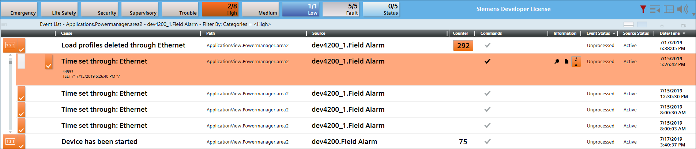

PAC4200
- PAC4200 is a power monitoring device for displaying, storing, and monitoring all relevant line parameters in low-voltage power distribution. Compared to PAC3200, the PAC4200 has extended measuring functions (> 800 measured variables), an integral memory for buffering the load profile and events, as well as, gateway functionality. It performs single-phase, two-phase, or three-phase measurement and can be used in two-wire, three-wire, or four-wire TN, TT, and IT systems.
- The minimum (>2000) supported firmware version for PAC4200 is V1.5. Connect the PAC4200 power monitoring device to Powermanager through the integral Ethernet interface using Modbus TCP.
Feature | Applicable |
Digital Inputs | Yes |
Digital Outputs | Yes |
Counters | Yes |
Synchronization | Yes |
Event Memory | Yes |
Power Period | Yes |
Power Quality | Yes |
N conductor | Yes |
Password | Yes |
TCP | Yes |
RTU | Yes |
Web page | No |
- Features Specific to the Device:
- PAC4200 Device also supports the Field System Alarm. The two classes of alarms supported by Powermanager are High and Low. For a StatusFixedAlarm property which is configured for a device in the Engineering mode, the field system alarms of the class High and Low are displayed and monitored in the Events tab of the Desigo CC application. PAC4200 device supports up to 4096 events, the type of events supported are listed below:
- Operating Information
- System Information
- Operation
- When the alarm is displayed in the Events tab, an option to acknowledge the alarm is provided along with the event and the source status.


On creation of PAC4200 with firmware version 2.0 or higher project has to be restarted to poll maximum harmonics values.
For PAC4200 devices once the type of use configuration of any digital output is changed in the device, Powermanager might take at least 5 minutes to update the type of use in Control tile Digital output section of respective devices.